Engine Rear Oil Seal (2AZ-FE) Installation |
| 1. Install Engine Rear Oil Seal |
Apply a small amount of MP grease No.2 to the lip of a new oil seal.
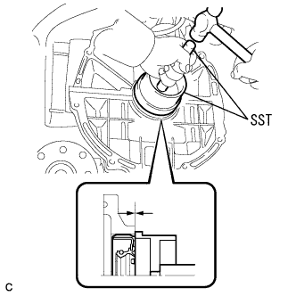 |
Using SST, tap in the oil seal evenly until it is flush with the end surface.
| 2. Install Drive Plate & Ring Gear Sub-assembly |
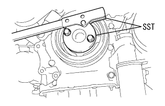 |
Using SST, hold the crankshaft.
Clean the bolts and bolt holes.
Apply adhesive 1324 to 2 - 3 threads from the tip of the bolts.
Temporarily install the drive plate spacer FR, drive plate & ring gear and drive plate spacer RR with the 8 bolts.
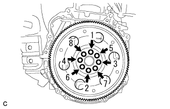 |
Fully tighten the 8 bolts in the order shown in the illustration.
| 3. Install Continuously Variable Transaxle Assembly |
Check that there are 2 knock pins on the engine side.
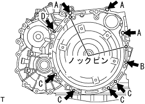 |
Keep the engine and continuously variable transaxle level, align the knock pins with the knock pin holes, and tighten the 9 bolts at the positions shown in the illustration.
| 4. Connect Water Bypass Hose |
 |
Install the 2 water bypass hoses with the 2 clamps.
| 5. Connect Engine Wire |
 |
Install the transmission wire connector, neutral start switch assembly connector, 3 transmission revolution sensor connectors and 3 clamps (*1).
 |
Connect the oil pressure sensor connector and 2 wire harness clamps.
| 6. Install Starter Assembly |
 |
Install the starter assembly with the 2 bolts.
 |
Connect terminal B with the nut.
Install the terminal cap cover.
Connect the connector to the starter assembly.
| 7. Install Engine Mounting Bracket Rear |
 |
Install the engine mounting bracket RR with the 3 bolts.
| 8. Install Engine Mounting Bracket Front |
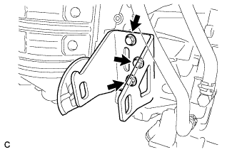 |
Install the engine mounting bracket FR with the 3 bolts.
| 9. Install Front Suspension Crossmember Sub-assembly |
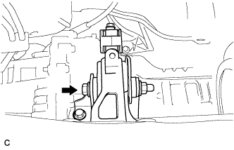 |
Install the engine mounting insulator RR w/ front suspension crossmember to the engine mounting bracket RR with the bolt.
| 10. Install Front Crossmember Sub-assembly |
 |
Install the engine mounting insulator FR w/ front crossmember to the engine mounting bracket FR with the bolt and nut.
| 11. Remove Engine Hangers |
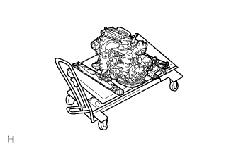 |
Set the height-adjustable attachment and plate lift attachment on the engine lifter, and set the engine assembly w/ transaxle, front crossmember and front suspension crossmember on the engine lifter.
Remove the engine sling device and chain block from the engine assembly.
 |
Remove the 2 bolts, engine hanger No.1 and engine hanger No.2.
| 12. Install Engine Assembly w/ Transaxle |
 |
Operate the engine lifter to install the engine assembly w/ transaxle, front crossmember and front suspension crossmember to the vehicle.
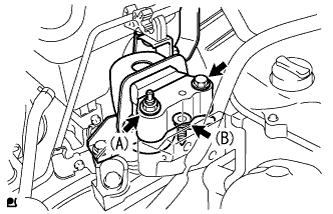 |
Install the engine mounting insulator RH to the engine mounting bracket RH with the bolt and 2 nuts.
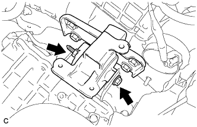 |
Install the engine mounting insulator LH to the engine mounting bracket LH with the bolt and nut.
Operate the engine lifter and temporarily install the front suspension crossmember to the vehicle with the 8 bolts.
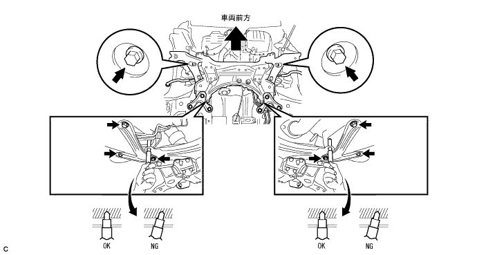
Align the position while alternately inserting the SST into the reference holes on the RH and LH sides of the front suspension crossmember, and tighten the RH and LH side bolts to the specified torque in several passes.
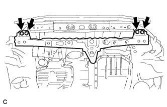 |
Install the front crossmember with the 4 bolts.
| 13. Install Front Suspension Member Reinforcement LH |
 |
Install the front suspension member reinforcement LH with the 4 bolts.
| 14. Install Front Suspension Member Reinforcement RH |
 |
Install the front suspension member reinforcement RH with the 4 bolts.
| 15. Install Engine Front Mounting Bracket Reinforcement Lower |
 |
Install the engine front mounting bracket reinforcement lower with the 2 bolts.
| 16. Install Drive Plate & Torque Converter Setting Bolt |
Using SST, hold the crankshaft.
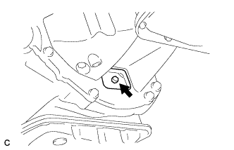 |
Clean the installation holes for the converter set bolts of the torque converter.
Apply adhesive 1324 to the 6 set bolts.
Tighten the 6 torque converter set bolts.
| 17. Install Flywheel Housing Under Cover |
 |
Install the flywheel housing under cover.
| 18. Install Front Drive Shaft Assembly LH |
 |
Apply CVT fluid TC to the spline of the inboard joint assembly LH.
Face the snap ring opening downward.
Align the splines of the drive shaft and transaxle, and insert the drive shaft assembly LH using a brass bar and hammer.
| 19. Install Front Drive Shaft Assembly RH (Drive Type FF) |
 |
Apply CVT fluid TC to the spline of the inboard joint assembly RH.
Align the splines of the drive shaft and transaxle, insert the drive shaft assembly, and tighten it with the 2 bolts.
| 20. Install Front Drive Shaft Assembly RH (Drive Type 4WD) |
 |
Apply CVT fluid TC to the spline of the inboard joint assembly RH.
Align the splines of the drive shaft and transaxle, and insert the drive shaft assembly.
Using a square-shank flat-tip screwdriver, compress the drive shaft bearing bracket hole snap ring and install it to the bearing bracket.
Install new bearing bracket bolt No.1 at the position on the bearing bracket shown in the illustration.
| 21. Install Front Axle Assembly LH |
Push the front axle assembly LH toward the outside of the vehicle, align the splines of the front drive shaft assembly LH with the front axle assembly LH, and insert it.
| 22. Install Front Axle Assembly RH |
| 23. Connect Front Suspension Arm Sub-assembly Lower NO.1 LH |
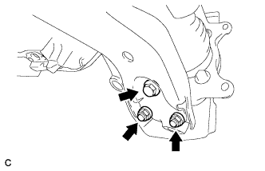 |
Push down the front suspension lower arm No.1 LH, install the front lower ball joint LH, and tighten it with the 1 bolts and 2 nuts.
| 24. Connect Front Suspension Arm Sub-assembly Lower NO.1 RH |
| 25. Install Tie Rod End Sub-assembly LH |
 |
Connect the tie rod end LH to the steering knuckle and install it with the castle nut.
Install a new cotter pin.
| 26. Install Tie Rod End Sub-assembly RH |
| 27. Connect Front Stabilizer Link Assembly LH |
 |
Install the front stabilizer link assembly LH to the shock absorber w/ coil spring with the nut.
| 28. Connect Front Stabilizer Link Assembly RH |
| 29. Install Front Axle Shaft Nut LH |
Using a socket wrench (30mm), install a new front axle hub nut LH.
 |
Using a chisel and hammer, stake the front axle hub nut LH.
| 30. Install Front Axle Shaft Nut RH |
| 31. Connect Speed Sensor FR LH |
 |
Install the flexible hose bracket and speed sensor harness bracket at part A to the absorber bracket with the bolt.
Install the flexible hose bracket at part B to the steering knuckle with the bolt.
 |
Install the speed sensor FR LH to the steering knuckle with the bolt.
| 32. Connect Speed Sensor FR RH |
| 33. Connect Steering Intermediate Shaft Assembly NO.2 |
 |
Align the matchmarks and connect steering intermediate shaft assembly No.2 to the steering intermediate shaft.
 |
Install the bolt.
| 34. Install Column Hole Cover Silencer Sheet |
 |
Install the column hole cover silencer sheet with the 2 clips.
Put the floor carpet back in place.
| 35. Temporarily Tighten Propeller Shaft with Center Bearing Assembly (Drive Type 4WD) |
 |
Align the matchmarks on the transfer assembly and propeller shaft assembly.
Temporarily tighten the propeller with center bearing shaft assembly with 4 new nuts and 4 washers.
 |
Align the matchmarks on the differential carrier assembly and propeller shaft assembly.
Temporarily tighten the propeller with center bearing shaft assembly with 4 new nuts and 4 washers.
 |
Temporarily tighten the center support bearing assembly with the 2 bolts, with the center support bearing washers in place.
| 36. Fully Tighten Propeller Shaft with Center Bearing Assembly (Drive Type 4WD) |
Fully tighten the 4 nuts installing the propeller shaft assembly to the transfer assembly.
Fully tighten the 4 nuts installing the propeller shaft assembly to the differential carrier assembly.
 |
Check that the housing center line of the center support bearing assembly is at a right angle to the propeller shaft axis.
Fully tighten the 2 installation bolts of the center support bearing assembly.
| 37. Inspect and Adjust Joint Angle (Drive Type 4WD) |
Before measuring the angle, settle each part using the following procedure.
Rotate the propeller shaft several times by hand.
Place a jack under the differential and move it up and down.
Using SST, measure the installation angle of the intermediate shaft assembly (A in the illustration).
| Angle | |
|---|---|
| A | -2°46’ ± 1° |
Using SST, measure the installation angle between the intermediate shaft assembly (A in the illustration) and propeller shaft assembly (B in the illustration).
| Angle | |
|---|---|
| A-B | 1°29’ ± 1°30’ |
Using SST, measure the installation angle between the propeller shaft assembly (B in the illustration) and differential (C in the illustration).
| Angle | |
|---|---|
| B-C | 2°10’ ± 1° |

If the result is not as specified, replace the adjusting washers at the center support bearing with appropriate ones.
| Part No. | Thickness (mm) |
|---|---|
| 90201-10123 | 2.0 |
| 90201-10081 | 4.5 |
| 90201-10083 | 6.5 |
| 38. Install Front Floor Heat Insulator NO.2 (Drive Type 4WD) |
 |
Install the front floor heat insulator No.2 with the 4 bolts.
| 39. Install Exhaust Pipe Assembly CTR (Drive Type 4WD) |
 |
Compression Spring Inspection
Using a vernier caliper, measure the free length of the compression spring.
 |
Gasket Installation
Insert a new gasket into the exhaust center pipe assembly as far as it will go by hand.
Install the exhaust center pipe assembly with the 3 exhaust pipe supports.
 |
Install the exhaust center pipe assembly with the 2 bolts and 2 compression springs.
| 40. Install Exhaust Pipe Assembly Front |
|
Compression Spring Inspection
Using a vernier caliper, measure the free length of the compression spring.
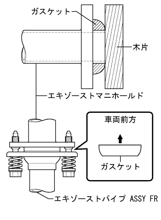 |
Gasket Installation
Insert a new gasket into the exhaust manifold converter as far as it goes by hand.
Using a wooden block and hammer, gradually tap in the gasket until it is flush with the exhaust manifold.
Install a new gasket to the exhaust pipe FR.
 |
Connect the exhaust pipe FR with the 2 bolts and 2 compression springs.
 |
Install the exhaust pipe assembly FR with the 2 bolts.
 |
Connect the oxygen sensor connector.
| 41. Install Fuel Pipe Support |
 |
Install the fuel pipe support with the bolt and clamp.
| 42. Connect Fuel Tube Sub-assembly |
 |
Connect the fuel tube connector to the fuel pipe. 。
 |
Install EFI fuel pipe clamp No.1.
| 43. Install Compressor Assembly (with Pulley) |
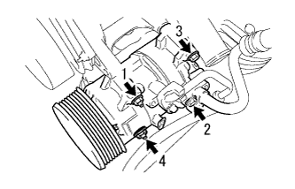 |
Using a torx socket wrench (E8), temporarily install the cooler compressor assembly with the 2 stud bolts.
Temporarily tighten the cooler compressor assembly with the 2 bolts and 2 nuts, then tighten them in the order shown in the illustration.
Connect the compressor connector.
| 44. Connect Engine Wire |
 |
Connect the ground wire with the bolt.
 |
Connect the ground wire with the bolt and clamp.
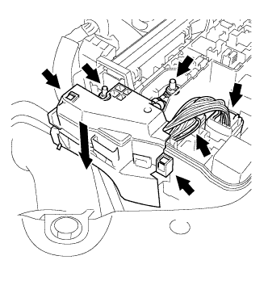 |
Connect the wire harness to the engine room junction block with the 2 nuts and 2 clamps.
Connect the connectors to the engine room junction block.
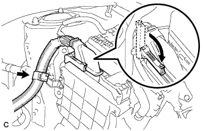 |
Connect the engine control computer connector to the engine control computer with the clamp and lock lever.
| 45. Install Transmission Control Cable Assembly |
 |
Install the transmission control cable with the nut.
Connect the transmission control cable to transmission control cable bracket No.1 with a new clip.
 |
Connect the clamp.
 |
Install the transmission control cable support to the engine mounting insulator RR with the bolt.
| 46. Connect Check Valve to Connector Tube Hose |
 |
Connect the check valve to connector tube hose with the clamp.
| 47. Connect Heater Water Inlet Hose A |
 |
Connect heater water inlet hose A with the clamp.
| 48. Connect Heater Water Outlet Hose |
 |
Connect the heater outlet water hose with the clamp.
| 49. Connect Radiator Inlet Hose |
 |
Connect the radiator inlet hose with the clamp.
| 50. Connect Radiator Outlet Hose |
 |
Connect the radiator outlet hose with the clamp.
| 51. Install Alternator Assembly |
 |
Check that the crankshaft position sensor wire harness is securely fitted into the wire harness clamp bracket and passes behind the rib of the timing chain cover.
 |
Install the Alternator with the 2 bolts.
 |
Install the harness clamp.
Install the clamp bracket with the bolt.
Connect the harness to the +B terminal with the nut.
Install the terminal cap.
Connect the connector.
| 52. Install Fan & Alternator V Belt |
 |
Using SST, slowly turn the V-belt tensioner clockwise and install the V-belt.
 |
Check that the belt is fitted on each pulley.
 |
Check that the belt is correctly set on each pulley.
Start the engine and check that the belt rotates smoothly with no abnormal noise.
| 53. Install Battery Carrier NO.2 |
 |
Install battery carrier No.2 with the 2 bolts.
| 54. Install Battery Carrier |
 |
Install the battery carrier with the 4 bolts.
Install the wire harness with the 2 clamps.
Install the battery tray.
| 55. Install Air Cleaner Case |
 |
Install the air cleaner case with the 3 bolts and clamp.
Install the air cleaner filter element.
| 56. Install Air Cleaner Cap w/ Air Cleaner Hose |
Install the hinge portion first, then install the air cleaner cap with the 3 clamps.
 |
Install air cleaner hose No.1 to the throttle body assembly and release the lock of air cleaner hose clamp No.1.
 |
Connect the clamp and intake air flow meter connector.
 |
Connect the fuel vapor feed hose and fuel vapor feed hose No.2 to vacuum switching valve assembly No.1.
Connect the clamp and vacuum switching valve connector.
Connect the ventilation hose.
| 57. Install Battery |
 |
Install the battery to the vehicle.
Install the insulator.
Install the battery clamp with the bolt and nut. (*1)
Connect the battery positive terminal with the nut.
 |
Connect the current sensor connector.
| 58. Fill Engine Oil |
| 59. Add Coolant (Toyota Genuine Super Long Life Coolant) |
Close the radiator drain cock plug.
Close the cylinder block drain cock plug.
 |
Fill coolant of the specified concentration up to the B line of the radiator reserve tank.
After installing the reservoir tank cap, warm up the engine until the thermostat opens. (A)
After warm-up, repeat the cycle of 3000rpm engine speed for 5 seconds ←→ idling for 45 seconds 8 times or more (7 minutes or more). (B)
Stop the engine and wait until the coolant cools down, and if the level is below LOW, add coolant of the specified concentration through the filler again and adjust it to between FULL and LOW. (C)
Repeat steps (A) to (C) until the coolant level in the radiator reservoir tank stops dropping.
When the level stops dropping, add coolant of the specified concentration through the filler again to adjust the coolant level in the radiator reservoir tank to between FULL and LOW.
| 60. Add Transfer Oil |
Using straight hexagon wrench 10mm and an offset wrench (10X12 long), remove transfer case plug No.2 (filler plug) and the gasket.
Fill with hypoid gear oil SX.
Check that the oil level is within 0-5 mm of the bottom edge of the transfer case plug No.2 (filler plug) hole.
Using straight hexagon wrench 10mm and an offset wrench (10X12 long), install transfer case plug No.2 (filler plug) with a new gasket.
| 61. Connect Battery Negative Terminal |
| 62. Add, Inspect and Adjust CVT Fluid |
Vehicle Condition Check
Work Content Check
Refer to the work flow below and follow the procedure.
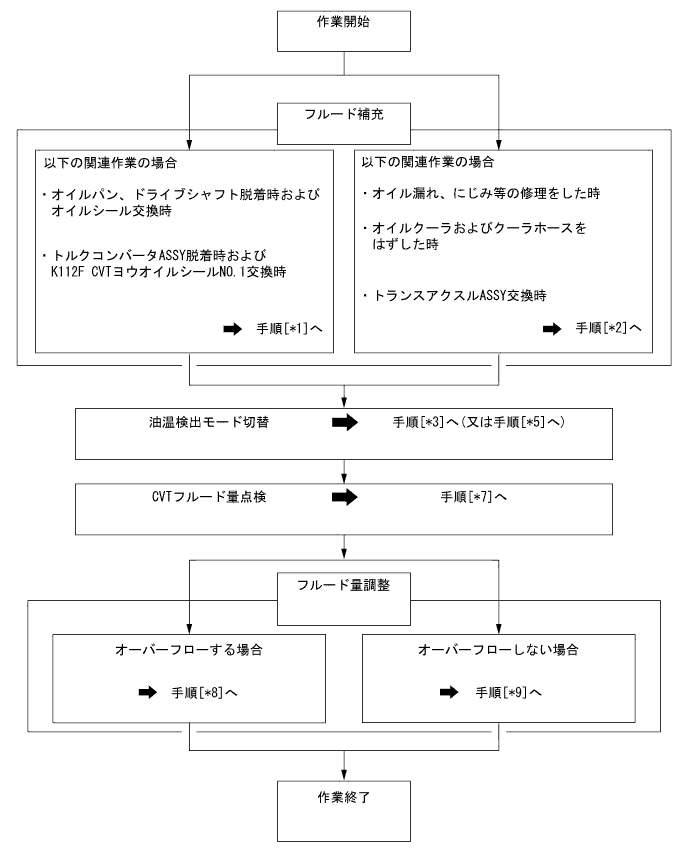
Add Fluid [*1]
Keeping the vehicle level, lift it up.
Remove engine under cover No.1.
Remove the engine under cover rear LH.
 |
Using a socket hexagon wrench 6, remove the overflow plug.
 |
Using a socket hexagon wrench 6, check that the overflow tube is tightened to the specified torque.
 |
Remove the refill plug.
 |
Add fluid through the refill hole until fluid flows out of the overflow.
|
Using a socket hexagon wrench 6, temporarily tighten the overflow plug.
Add the specified amount of fluid through the refill hole.
| Related Work | Refill Amount (Reference) | |
|---|---|---|
| When the oil pan is removed/installed, when the drive shaft is removed and when an oil seal is replaced | 1.9L | |
| When the torque converter assembly is removed and when K112F CVT oil seal No. 1 is replaced | 3.6L | |
|
Temporarily tighten the refill plug.
Lower the vehicle.
Add Fluid [*2]
Keeping the vehicle level, lift it up.
Remove engine under cover No.1.
Remove the engine under cover rear LH.
Remove the refill plug.
Add the specified amount of fluid through the refill hole.
| Related Work | Refill Amount (Reference) | |
|---|---|---|
| When the oil cooler and cooler hoses have been removed | 0.4L | |
| When oil seepage, etc. has been repaired | 0.4L | |
| When the transaxle assembly has been replaced (new torque converter assembly used) | 6.2L | |
| When the transaxle assembly has been replaced (torque converter assembly reused) | 5.6L | |
Temporarily tighten the refill plug.
Lower the vehicle.
Switching to Oil Temperature Detection Mode (with TC Terminal Shorted) [*3]
Turn IG ON.
Turn OFF the switches for the air conditioning, audio system, etc.
Turn IG OFF.
 |
Using SST, connect terminals 13 (TC) and 4 (CG) of DLC3.
Start the engine.
Slowly move the shift lever from P to D, then shift it back to P.
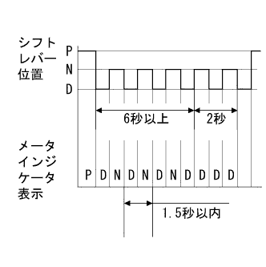 |
Switch to oil temperature detection mode.
| Oil Temperature Detection Mode Switching Procedure |
|---|
| Perform the N - D operation within 1.5 seconds |
| Perform the above operation continuously for 6 seconds or more |
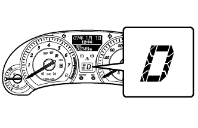 |
The meter indicator light [D] illuminates for 2 seconds and then goes off.
 |
Depending on the fluid temperature, the meter indicator light comes on, goes off or blinks.
Fluid Temperature Adjustment (with TC Terminal Shorted) [*4]
Move the shift lever to P.
|
Disconnect terminals 13 (TC) and 4 (CG) of DLC3.
To raise the CVT fluid temperature, warm up the engine at idle.
As soon as the meter indicator light [D] illuminates, lift up the vehicle.
Switching to Oil Temperature Detection Mode (Using SST (TaSCAN)) [*5]
Connect SST (TaSCAN) to DLC3.
Start the engine with the switches for the air conditioning, audio system, etc. turned OFF.
Select the Active Test (TC terminal ON), and with the A/T oil temperature displayed, turn the TC terminal ON.
Slowly move the shift lever from P to D, then shift it back to P.
 |
Switch to oil temperature detection mode.
| Oil Temperature Detection Mode Switching Procedure |
|---|
| Perform the N - D operation within 1.5 seconds |
| Perform the above operation continuously for 6 seconds or more |
The meter indicator light [D] illuminates for 2 seconds and then goes off.
|
Depending on the fluid temperature, the meter indicator light comes on, goes off or blinks.
Fluid Temperature Adjustment (Using SST (TaSCAN)) [*6]
Move the shift lever to P.
Turn the TC terminal from ON to OFF.
To raise the CVT fluid temperature, warm up the engine at idle.
As soon as the meter indicator light [D] illuminates, lift up the vehicle.
Checking Fluid Level [*7]
|
Using a socket hexagon wrench 6, remove the overflow plug.
Check the fluid condition.
If it overflows, go to step [*8]
If it does not overflow, go to step [*9]
Adjusting Fluid Level (When Overflowing) [*8]
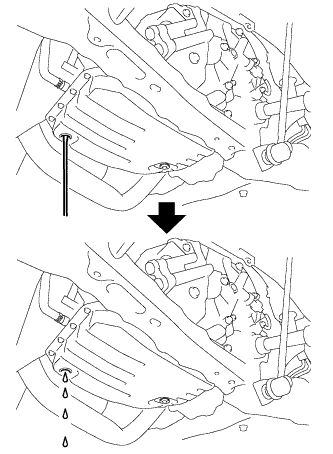 |
When the fluid flow changes from a thin stream to drips, fully tighten the overflow plug with a new gasket.
|
Fully tighten the refill plug with a new gasket.
Install the engine under cover rear LH.
Install the engine under cover No.1.
Lower the vehicle.
Turn IG OFF and disconnect SST (TaSCAN).
Refilling Fluid (When Not Overflowing) [*9]
|
Remove the refill plug.
|
Add fluid through the refill hole until fluid flows out of the overflow.
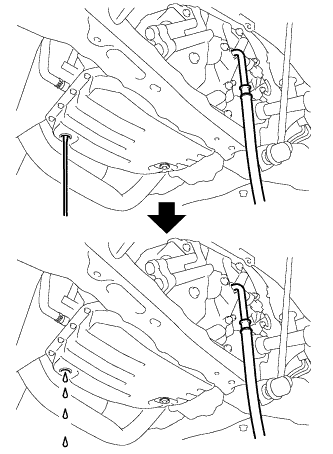 |
When the fluid flow changes from a thin stream to drips, fully tighten the overflow plug with a new gasket.
|
Fully tighten the refill plug with a new gasket.
Install the engine under cover rear LH.
Install engine under cover No.1.
Lower the vehicle.
Turn IG OFF and disconnect SST (TaSCAN).
| 63. Inspect for Fuel Leaks |
Fuel Pump Operation Check
Connect SST (TaSCAN) to DLC3.
Operate according to the screen display, select 'Active Test' - 'Circuit Relay' - 'ON', and check the fuel pump operation.
Fuel Leak Inspection
Check that there are no fuel leaks in the fuel system while fuel pressure is applied.
| 64. Inspect for Coolant (Toyota Genuine Super Long Life Coolant) Leaks |
 |
Fill the radiator with coolant and install a radiator cap tester.
Warm up the engine.
118kPa{1.2kgf/cm2Pump it to } and check that the pressure does not drop.
| 65. Inspect for CVT Fluid Leaks |
| 66. Inspect for Engine Oil Leaks |
| 67. Inspect for Exhaust Gas Leaks |
Check that there are no exhaust gas leaks from the locations shown in the illustration (exhaust pipe joints and each sensor installation area).

| 68. Install Engine Under Cover Rear LH |
Install the engine under cover rear LH with the 5 clips.
| 69. Install Engine Under Cover Rear RH |
| 70. Install Front Tire |
| 71. Check Front Wheels Straight-ahead Position |
| 72. Inspect Shift Lever Position |
Turn IG ON and depress the brake pedal.
When shifting the shift lever to each position, check that the shift lever operates smoothly, moves into each position with a positive feel, and the position indicator shows the position correctly.
Start the engine, and check that the vehicle moves forward when shifting from the N position to the D position, and moves backward when shifting to the R position.
| 73. Inspect Ignition Timing |
Warm up the engine.
Inspection Using TaSCAN
Connect SST (TaSCAN) to DLC3.
Operate according to the screen display, select [Ignition Timing] and check that the ignition timing is within the standard.
Check that the ignition timing advances quickly when the engine speed is increased.
Select [Active Test] - [TC Terminal ON], turn the TC terminal ON and measure the ignition timing.
Inspection by Shorting TC Terminal
Remove engine cover assembly No.1.
Connect a timing light.
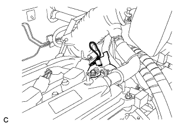 |
Pull out the wire harness at the position shown in the illustration and connect the timing light clip to the wire harness.
|
Using diagnosis check wire No. 2, connect terminals 13 (TC) and 4 (CG) of DLC3.
Check that the ignition timing is within the standard.
Disconnect terminals 13 (TC) and 4 (CG) of DLC3.
Check that the ignition timing is within the standard.
Check that the ignition timing advances quickly when the engine speed is increased.
Remove the timing light.
Install engine cover assembly No.1.
| 74. Inspect Idle Speed |
Connect SST (TaSCAN) to DLC3.
Operate according to the screen instructions to display the "ECU Data Monitor" screen and measure the engine speed.
| 75. Inspect CO, HC Concentration |
Start the engine.
Race the engine at 2500r/min for 2 minutes.
At idle, insert the tester probe 40cm or more into the tailpipe.
Inspect the CO and HC concentrations.
If the CO and HC are outside the standard, inspect using the procedure shown below.
Inspect Oxygen Sensor (see)
Perform troubleshooting referring to the table below.
| CO | HC | Problem | Probable Cause |
|---|---|---|---|
| OK | High | Rough idle |
|
| Low | High | Rough idle (HC unstable) |
|
| High | High | Rough idle (black smoke) |
|
| 76. Inspect Engine Oil Level |
Warm up the engine, stop it, and after 5 minutes inspect that the oil level is between the L and F marks on the oil level gauge. If the oil level is low, inspect for leaks and add oil up to the F mark.
| 77. Inspect Transfer Oil |
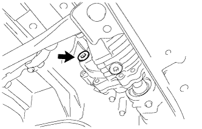 |
Using straight hexagon wrench 10mm and an offset wrench (10X12 long), remove transfer case plug No.2 (filler plug) and the gasket.
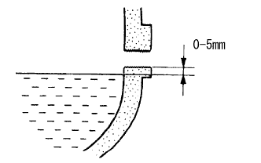 |
Check that the oil is within 0-5 mm of the bottom edge of the transfer case plug No.2 (filler plug) hole.
If the oil level is low, check for oil leaks, then add oil.
Using straight hexagon wrench 10mm and an offset wrench (10X12 long), install transfer case plug No.2 (filler plug) with a new gasket.
| 78. Install Engine Cover Sub-assembly NO.1 |
 |
Install the engine cover assembly No.1 with the 2 nuts.
| 79. Install Radiator Upper Air Deflector |
Install the radiator upper air deflector with the 8 clips.
| 80. Install Engine Under Cover NO.2 |
Install engine under cover No.2 with the 5 clips.
| 81. Install Engine Under Cover |
Install the engine under cover with the 4 bolts and 4 screws.
| 82. Install Engine Under Cover NO.1 |
Install the engine under cover No.1 with the 6 bolts and 7 clips.
| 83. Perform Test Mode Inspection (Speed Sensor System) |
)| 84. Initialization after Battery Terminal Disconnection and Reconnection |
)| 85. Inspect and Adjust Front Wheel Alignment |
)| 86. Road Test |